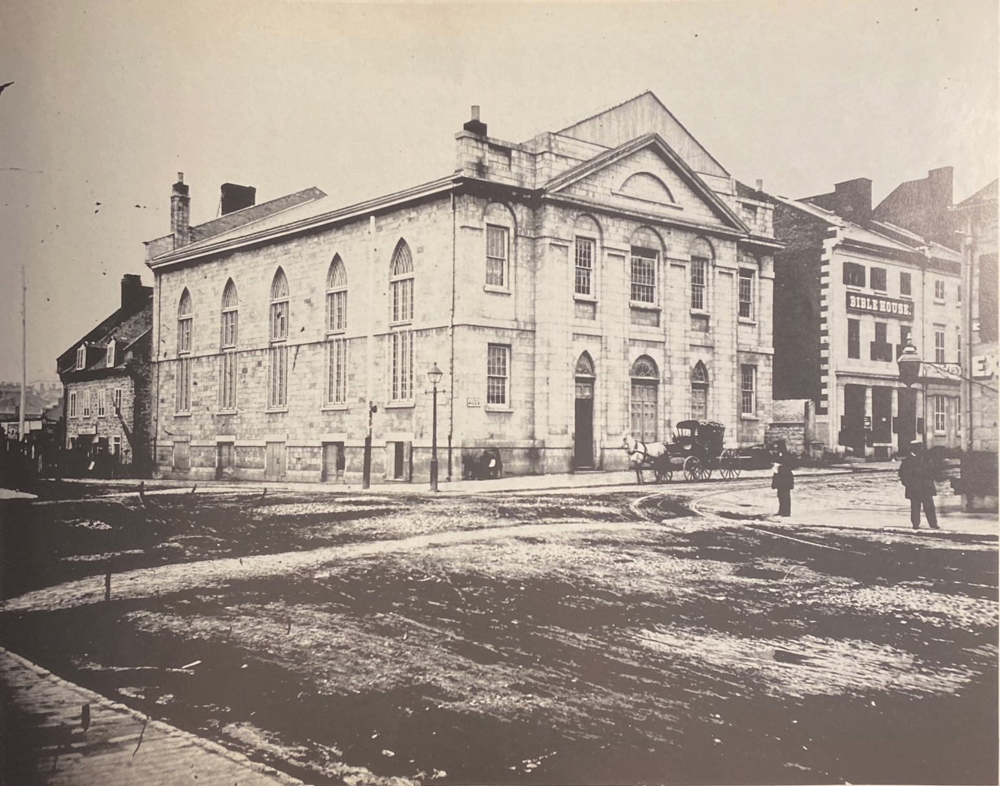
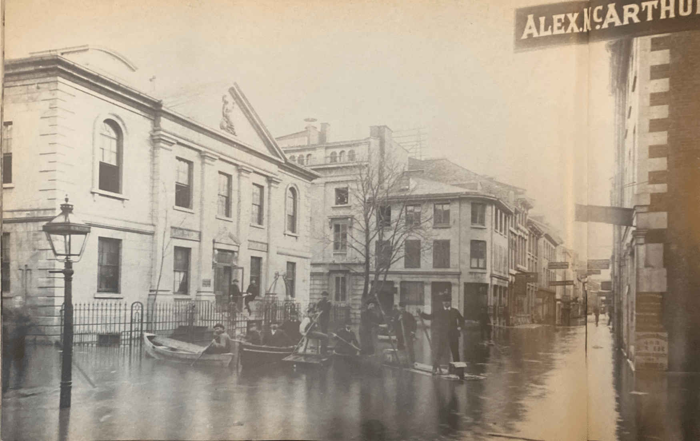

Montreal Then and Now
Montreal Then and Now is a personal project that began when I discovered a Montreal Gazette photographer and journalist named Bryan Demchinsky. He published a book in 1985 called Montreal Then and Now/ Hier et Aujourd'hui where photos of the city as it was in the 80s were compared to the same location as it was 100 or more years back.
I took the locations from the book and visited them in March/ April 2021 to retake the photos and use them for an interactive web map. This personal project is very much a work in progress and is not associated with the original author of the book. Click any of the images to open the map and explore the rough draft!
|
American Presbyterian Church 1865 Now a Scotiabank, the American Presbysterian Church formed in 1823 when members of St. Andrews Church of Scotland formed their own congregation. |


|
|
Place Royale 1886 In the older image you can see some men in boats in the middle of the road. In 1886 and 1887 the St Lawrence flooded the city, the streets of Montreal were under over 1 meter of water. |


|